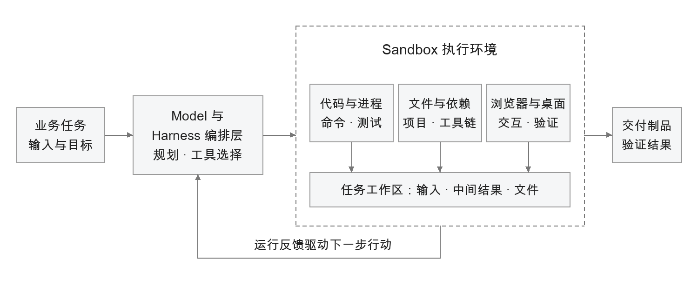
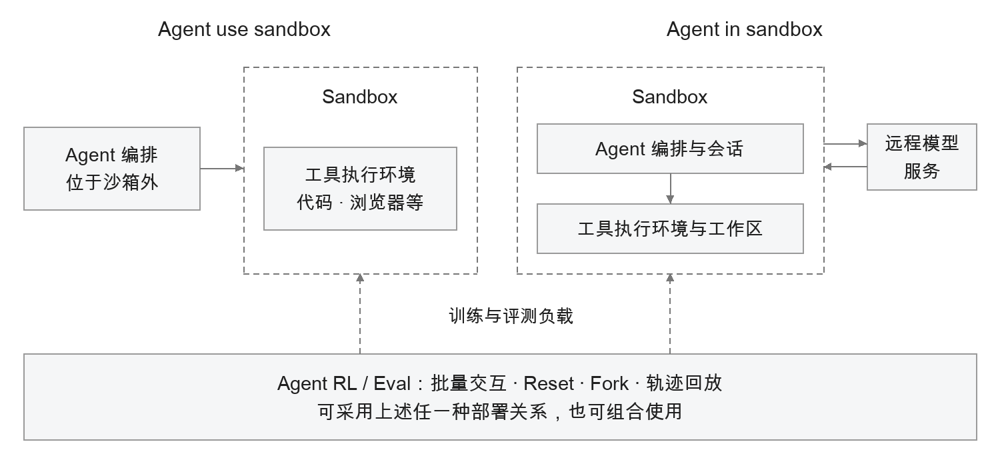
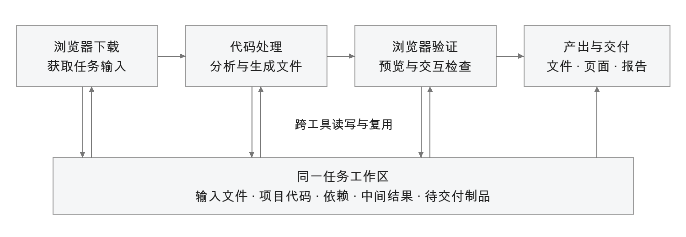
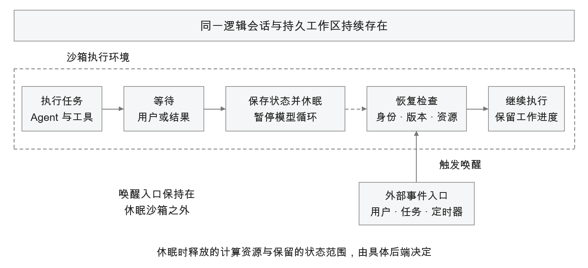
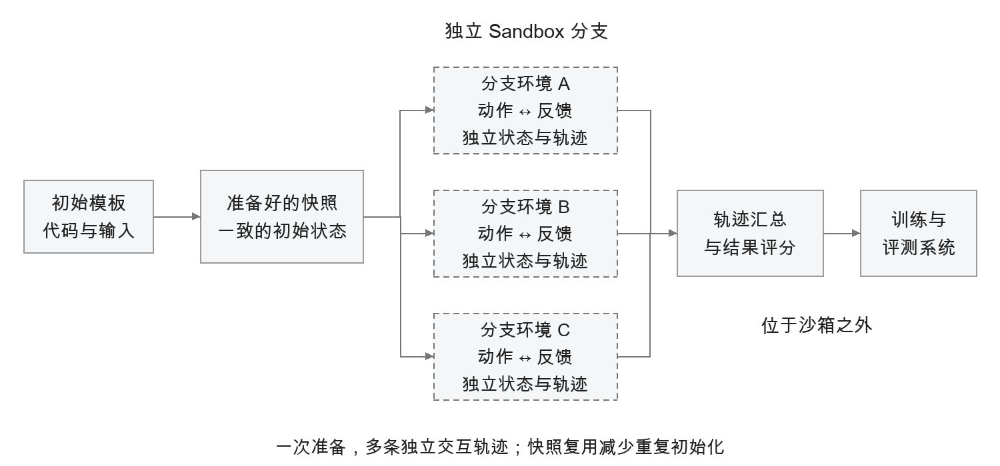
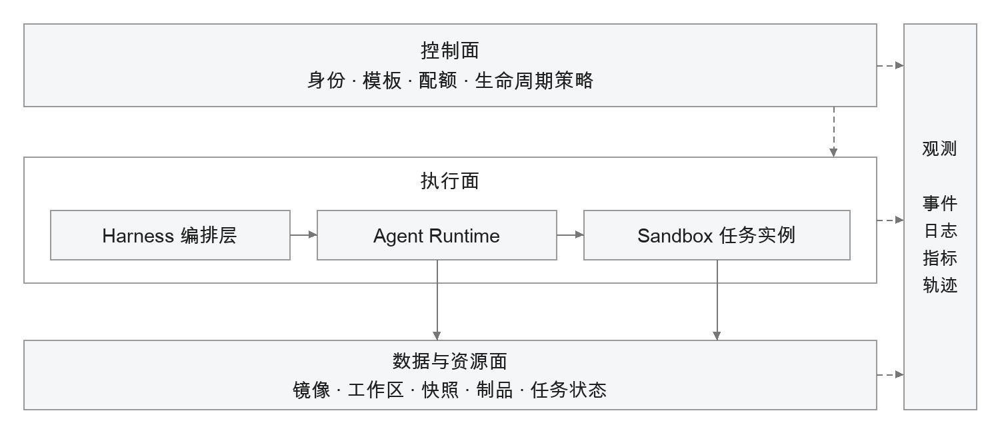
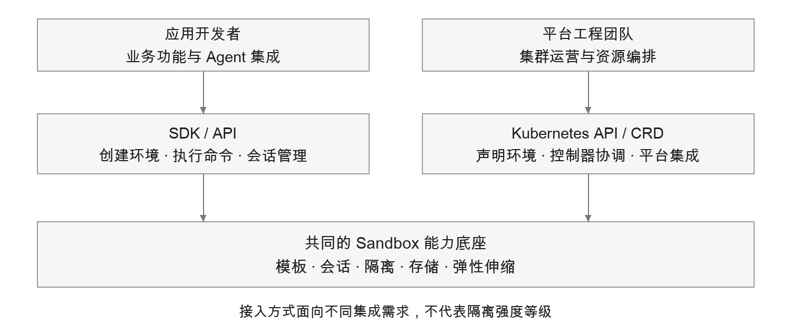

第 7 章 Agent 运行时与沙箱¶
面向任务执行的 Agent，需要将模型推理与环境操作结合起来。模型负责生成计划和操作指令，文件读写、程序运行、页面交互及结果验证则由具体的执行环境完成。随着工具增多、任务变长，执行环境还需要支持跨步骤的数据共享、多轮交互中的状态延续，以及多个任务的独立运行。
沙箱（Sandbox）为这些操作提供可编程、受控的工作空间。它将计算资源、文件系统、运行依赖，以及终端、浏览器或桌面等工具组织在按需分配的环境中，使 Agent 能够执行操作、检查结果，并根据反馈调整后续行动。任务隔离、访问控制和资源管理约束操作范围，工作区与状态保留机制支持任务继续推进。
不同任务对执行环境的要求有所不同。工具执行关注环境能否快速就绪，长时任务关注已有成果能否持续使用，训练与评测关注大量独立尝试能否高效开展。模板复用、共享工作区、休眠恢复和快照分叉分别支撑这些需求。Agent Runtime 负责将环境的创建、连接、等待、恢复与回收纳入任务生命周期，使沙箱能够持续承载 Agent 应用。
7.1 从工具调用到可编程工作空间¶
7.1.1 Sandbox 提供什么¶
在 Agentic Application 中，Sandbox 是按任务需要配置、具有隔离边界和明确生命周期的执行环境。典型环境包含操作系统用户空间、计算资源、文件系统、语言与依赖，以及终端、浏览器或桌面等操作入口。平台还可以为它配置网络访问、数据挂载、身份凭证、观测和状态保留方式。这些能力共同决定 Agent 能做什么、在哪里做，以及任务结束后留下什么。
可编程能力使 Agent 能够在授权范围内组织操作步骤。处理一组格式不统一的文件时，Agent 可以检查样本、生成转换脚本、安装必要的解析库，再根据运行结果修正脚本；开发应用时，可以组合终端、测试程序和浏览器完成修改与验证。这类环境适合操作路径需要在执行过程中逐步确定的任务。对于参数明确、行为固定的业务动作，应用可以直接调用已有 API，无须为每次查询创建沙箱。
执行控制决定这些操作能否进入生产环境。平台将任务限制在分配的计算资源、工作区和访问范围内，避免一个项目的依赖、进程和临时文件干扰其他项目，并在任务结束后回收资源。隔离是基础，环境是否可用还取决于依赖安装、文件访问、服务启动和结果返回等环节。代码、浏览器、桌面和工作区可以由统一的环境服务提供，并通过生命周期接口管理。

图 7-1 Sandbox 支撑真实执行与反馈闭环
图 7-1 中，模型与 Harness 编排层决定下一步行动，Sandbox 执行命令并返回退出状态、错误、文件变化或页面结果。编排层据此判断继续修改、换一种方法还是结束任务。沙箱让这些判断获得可检查的运行依据；业务结果是否正确，仍需由测试、规则、评测器或用户验收来确认。
7.1.2 两种部署关系与三类典型负载¶
Agent 与沙箱有两种常见的部署关系。Agent use sandbox 表示 Agent 的编排逻辑位于沙箱外，通过接口调用其中的代码、浏览器或其他工具；Agent in sandbox 表示 Agent 进程和主要工具链共同运行在沙箱内，模型推理服务仍可位于远端。前者便于为已有应用增加执行能力，后者适合需要完整项目环境、持续进程和复杂工具协作的任务。
训练与评测是另一个观察维度。Agent RL/Eval 关注批量环境交互、轨迹采样、重置和重复实验，可以采用上述任一种部署关系。因此，use、in 和 RL/Eval 可以作为三类典型负载来讨论，但不能理解为三个互斥的技术架构，也不能固定对应某一种产品版本。

图 7-2 Agent 与 Sandbox 的部署关系及负载类型
| 典型负载 | 任务如何使用环境 | 首要价值 | 主要关注点 |
|---|---|---|---|
| 工具执行：Agent use sandbox | 编排在外，按步骤调用代码、浏览器或桌面 | 为已有 Agent 增加真实操作与结果验证能力 | 首次可用时延、工具能力、任务间隔离 |
| 长时任务：Agent in sandbox | Agent 进程与工具链共同使用持续工作区 | 延续项目状态，支持多轮修改和长任务 | 会话连续性、恢复效果、等待成本 |
| 训练与评测：Agent RL/Eval | 批量运行独立交互，收集轨迹与结果 | 并行探索，复用环境准备，稳定比较结果 | 环境吞吐、重置与分叉、实验可复现性 |
表 7-1 三类典型负载的任务特征与价值
表中给出的是典型组合；工具沙箱也可以维持长会话，运行在沙箱内的 Agent 也可以只处理一次短任务。选型应从任务特征出发，再确定模板、状态与弹性策略。
7.2 工具执行：让 Agent 完成实际操作¶
7.2.1 代码与数据处理¶
代码沙箱为 Agent 提供解释器、命令行、依赖和文件读写能力。以经营数据分析为例，用户提交多个数据文件后，Agent 先检查列名和异常值，再编写脚本完成清洗、合并和统计，输出图表及结果文件。执行错误返回任务循环，Agent 据此修正字段映射或计算逻辑，重新运行并检查输出。最终交付包括输入文件、处理过程和结果产物，用户可以据此复核分析结论。
代码沙箱支持在任务内部灵活组合处理步骤。开发团队无须为每种文件结构和分析流程预先编写专用工具，Agent 可以在受控环境中编写和执行程序。不同用户使用独立的工作区和依赖，减少库版本冲突、文件混用及遗留进程造成的干扰。高频、稳定的计算可以进一步沉淀为固定工具，变化较多、需要执行中探索的部分则由沙箱承载。
这类任务需要依据产物验收。命令执行成功只表示程序正常退出，还应核对数据范围、输出文件、关键统计结果和可读性。输入版本、执行脚本与必要日志应随任务保留，便于用户复核结论，并在后续任务中复用处理过程。
7.2.2 浏览器、桌面与共享工作区¶
浏览器沙箱适合需要实际页面状态的任务，例如检查生成网页、在授权站点检索资料、处理文件上传下载，以及验证用户操作流程。Agent 通过浏览器控制接口观察页面、点击控件并读取结果；页面截图、下载文件和运行日志可以共同构成反馈。桌面沙箱进一步提供图形界面操作能力，用于依赖桌面软件或尚无合适 API 的流程。具体操作系统、应用和交互接口由所选模板与平台能力决定。
单独提供浏览器或解释器可以完成局部动作，跨工具任务还需要共享工作区。以“下载业务数据并生成一份报告”为例，浏览器把数据保存到任务目录，代码解释器直接读取该文件进行处理，生成的页面再由浏览器打开检查，最终报告从同一工作区导出。All-in-One（AIO）环境把浏览器、代码和终端放在可共享文件的工作空间中，减少步骤之间反复上传下载、路径转换和版本对齐的工作。

图 7-3 共享工作区支撑跨工具任务
共享的范围应与任务相匹配。同一任务的工具可以访问需要协作的文件，不同租户与项目仍应分开；并行分支若要修改同一文件，需要明确的合并规则。对于只使用代码的简单任务，轻量模板通常更合适；组合环境适用于跨工具收益足以覆盖镜像体积、启动和维护成本的情况。
7.2.3 MCP Server 与 Skill 的运行环境¶
MCP 描述工具如何被发现和调用，Skill 提供可复用的任务知识、步骤或脚本。它们执行时仍可能依赖特定语言、命令行程序、本地文件或浏览器。沙箱把这些依赖组织为可启动的环境，使原本只在某台开发机上运行的工具能够按用户或任务分配，并在使用后释放。
例如，一个通过标准输入输出交互的 MCP Server 可以随沙箱启动，由适配层把远程请求转换为进程输入，并把结果返回调用方。协议转换由适配层或网关完成，沙箱负责承载进程、依赖和工作区。两者配合后，平台可以在工具暂时无人使用时回收或休眠环境，在请求增加时按需扩容，同时保留不同工具版本与用户数据之间的边界。
| 环境类型 | 典型任务 | 任务产物 | 沙箱带来的直接收益 |
|---|---|---|---|
| Code | 清洗数据、运行脚本、构建与测试 | 结果文件、图表、测试报告 | 按任务组织程序，复用依赖并获得执行反馈 |
| Browser | 页面交互、下载、网页预览与检查 | 页面结果、文件、截图 | 直接验证真实页面及操作效果 |
| Computer | 操作桌面软件、完成图形界面流程 | 应用内结果、导出文件 | 覆盖缺少合适 API 的任务路径 |
| AIO | 下载、计算、生成、预览的连续任务 | 可检查的综合交付物 | 多种工具共享文件，减少步骤衔接成本 |
| MCP / Skill 环境 | 运行带本地依赖的工具与任务脚本 | 工具结果、业务所需文件 | 将工具依赖变成可分配、可维护的运行环境 |
表 7-2 常见沙箱环境与任务价值
这些环境类型可以组合，也可以复用同一套基础设施。平台统一管理生命周期、镜像、存储和观测能力，向应用提供与任务相匹配的操作入口。应用团队负责判断操作是否满足任务要求，平台团队负责环境的创建、连接和回收。
7.3 长时任务：让 Agent 在同一工作空间持续工作¶
7.3.1 从一次调用延伸到一个项目¶
长时任务通常围绕一个项目展开。开发一个应用时，Agent 会取得仓库、安装依赖、修改代码、运行测试、启动预览服务，并等待用户查看。用户下一次提出修改意见时，前一次的代码、依赖和项目结构应当仍然可用。Agent in sandbox 可以让 Agent 进程、命令行工具和浏览器围绕同一工作区运行，避免每个步骤重新拼接环境。
云端个人助理和数字员工也需要持续的工作环境。它们可能跨多轮交互处理文档、维护项目资料、使用授权系统，并保留尚未交付的中间结果。用户关注的是下一次能否从已有成果继续；平台则需要通过稳定的会话标识、可恢复的任务状态和按需保留的工作区实现这种连续性。仅维持进程存活，无法完整承担这些责任。
例如，一个代码 Agent 已经安装工具、修改文件并生成中间产物，随后进入模型等待阶段。如果平台仅因 CPU 使用率较低就回收实例，而这些成果只保存在实例内部，下一次请求便只能从头开始。要在保留弹性的同时延续项目，就需要让任务状态和工作区独立于当前承载保存，并在实例更换后重新接回。
多 Agent 协作还会增加分支需求。多个执行者可以从共同的项目版本出发，各自在独立工作区尝试实现或验证，再由协调者比较结果并合并。这样可以减少相互覆盖文件、端口冲突和依赖变化造成的干扰。沙箱提供独立执行条件，任务拆分、协作决策与合并仍由 Harness 编排层承担。
7.3.2 会话亲和与工作区挂载¶
任务连续性依赖两类映射。第一类将逻辑会话关联到执行环境：请求携带稳定的会话标识到达后，路由层查找已有环境，或启动恢复流程。第二类将任务身份关联到工作区：平台根据已验证的租户、用户和项目关系，为环境挂载对应的数据目录。会话亲和负责请求与环境的关联，动态挂载负责环境与数据的关联。
这两类映射不必一一对应。同一项目的多轮请求可以复用一个环境；也可以在原实例释放后创建新实例，重新挂载项目文件。用户级助理可以拥有个人工作区，独立项目则需要进一步细分。选择何种粒度取决于数据边界、并发方式和故障影响范围。仅把用户编号拼接到目录名中，并不能代替服务端对工作区归属及访问权限的检查。对外入口可以保持稳定，路由层负责将逻辑标识解析到当前环境，调用方不应把某个容器的临时地址作为长期入口。
工作区文件与任务状态承担不同责任。源码、下载文件和中间制品保存在工作区；任务目标、已完成步骤、待确认事项和外部操作结果构成任务事实，应由状态存储保存。恢复内存和磁盘之后，编排层仍需确认任务进度，避免重复提交操作或遗漏后续步骤。
运行期间新增的工具和依赖，需要明确恢复方式。可预知的依赖固化到版本化模板，临时依赖尽量安装到持久化覆盖的项目目录。系统路径中的改动应保留可重建的安装步骤，或通过覆盖该范围的环境快照保存。工作区挂载只恢复其覆盖的文件，不能据此判断全部环境变化已经恢复。
实例恢复时，应同时核对状态的可读性、归属，以及必要文件和版本的完整性。检查未通过，实例应保持恢复失败或等待状态，不能将空工作区作为恢复结果交付。任务状态和工作区的保留期应独立于计算实例设置，避免回收实例时删除仍需使用的数据。
7.3.3 等待、休眠与任务续行¶
长会话中的计算需求并不连续。Agent 可能等待模型返回、用户确认、网页响应或下一次业务事件。持续保留完整计算资源，会使成本随会话保留时间增长；每次等待都销毁环境，又会增加依赖安装和上下文恢复的开销。休眠与恢复在保留必要状态的前提下降低等待阶段的资源占用，并在后续事件到达时恢复执行。

图 7-4 长会话的等待、休眠与续行
图 7-4 中，唤醒入口位于休眠沙箱之外。定时器、消息入口或请求路由组件先接收事件，再恢复环境并交付任务；休眠中的 Agent 自身不继续执行任务循环。需要持续计算、保持即时服务或完成后台作业的阶段，应保持相应资源活跃。判断能否休眠也不能只看“没有新请求”，还应检查正在运行的工作和未完成操作。任务进入等待前，编排层应保存继续点和等待条件；重要增量应随执行推进及时保存，不能全部留到收到终止信号时才写出。
环境恢复后，应重新检查其可用性。文件即使得到保留，外部连接、临时凭证和远端登录状态也可能已经变化，服务端口同样需要检查。E2B 的持久化文档区分运行、暂停与销毁，并说明暂停会中断外部连接；阿里云的休眠文档要求在恢复后检查关键文件、进程与端口。因此，恢复结果应以任务能否继续执行为依据，接口返回成功只是其中一个环节。
7.3.4 实例故障后如何继续¶
除主动休眠外，长时任务还需要处理进程退出和节点失联。恢复前应区分执行环境故障与依赖服务故障。执行实例故障可以通过更换承载、恢复状态处理；必要存储不可用时，应暂停相关读写并恢复存储服务，反复重建实例无法消除存储故障。
失去心跳只表示平台暂时观察不到实例，旧进程仍可能继续运行。对于需要串行修改同一任务或工作区的执行，应先确认旧实例已停止，或使其写入权限失效，再让新实例继续写入。平台可以用执行代次区分接管前后两次执行，并由受保护的存储或写入入口拒绝旧代次，这类机制通常称为围栏。仅更新控制面的编号，不能阻止旧进程继续产生影响。
对已经提交给外部系统的操作，恢复时还需要核对其执行结果。例如，Agent 提交构建后尚未收到结果就失联，新实例应根据原构建标识查询状态，再决定等待、读取结果或重试。不能安全重复的操作，在结果不明时应保持待核对状态，必要时交由人工处理。只有任务能够从已有成果继续推进，才能确认恢复完成。
7.4 训练与评测：为并行探索提供环境¶
7.4.1 环境交互为什么影响吞吐¶
Agent 的强化学习和评测通常需要真实执行。以代码修复任务为例，每次尝试都要取得对应仓库、准备依赖、运行 Agent、执行测试并收集结果；浏览器与桌面任务则需要初始化页面、账户或应用状态。一次从初始状态出发、经过多步动作得到结果的交互过程，构成一条 rollout 轨迹。
并行运行时，环境准备、文件读写、测试执行和资源回收都会影响有效轨迹的产出。即使模型推理仍有余量，任务也可能因环境尚未就绪或操作结果尚未返回而等待。沙箱平台负责批量提供执行环境、隔离不同尝试并回收资源，减少训练过程中的环境等待。
训练和评测对环境的要求有所不同。训练通常追求足够多且有效的探索，评测更强调不同模型与版本面对可比较的任务条件。二者都需要记录模板、数据和依赖版本，限定执行预算，并清楚区分“Agent 没有完成任务”和“环境本身未能正常提供服务”。否则，环境故障可能被误计为模型能力变化。
7.4.2 Template、Snapshot、Fork 与 Reset¶
模板定义环境的初始配置，包括操作系统、工具版本、依赖和启动参数。快照保存某个时间点的运行状态，具体范围可以包括文件系统或内存。Fork 从同一快照创建独立分支，复用快照之前的准备结果；Reset 将实验环境恢复到约定的初始条件，可以通过重新创建、快照恢复或专门的重置逻辑实现。
这四项能力解决的问题不同。模板让重复任务有一致的起点；快照把已经完成的准备工作保存下来；Fork 让多次尝试从同一阶段并行展开；Reset 防止上一轮尝试的改动污染下一轮结果。Agents 的快照文档也将一对一的暂停恢复与一对多的快照克隆区分开来。

图 7-5 快照与分叉支撑并行探索
例如，同一个代码任务可以先完成仓库检出、依赖安装和基础测试，再保存环境快照。多个沙箱从该快照分叉，不同策略分别修改代码、执行测试，随后汇总补丁、测试结果和轨迹。这样可以复用环境准备过程；实际收益取决于准备成本、快照大小、分叉次数和恢复开销。
可比较的初始条件需要覆盖全部相关状态。沙箱快照不能自动回退外部数据库、已经发送的消息或已经完成的业务操作。评测任务应使用独立的数据副本、测试租户或明确的外部重置机制；分支写入应进入各自的可写空间，避免共享挂载把一次修改传播给其他分支。沙箱快照也不同于模型训练检查点，后者通常保存权重、优化器等训练状态。
7.4.3 从环境结果到训练信号¶
环境负责返回观察、执行结果和轨迹，训练或评测系统再据此计算得分、比较策略或更新模型。测试退出码、页面截图和文件差异是证据，但如何定义成功、如何计算奖励，属于评测逻辑。对于会修改代码和文件的 Agent，评分规则与关键验证材料应受到独立保护，避免执行者通过修改评分环境获得失真的结果。
评估平台收益时，应区分环境能力与模型能力的贡献。沙箱影响环境供给、动作执行、状态复用和轨迹采集；模型服务缓存、推理调度及训练算法带来的改善，需要分别评估。分阶段记录耗时和失败原因，才能判断提高环境并发是否增加了有效样本产出。
7.5 运行机制与任务收益¶
7.5.1 环境复用与受控尝试¶
环境复用可以减少重复准备。平台将语言、依赖、工具和启动步骤固化为版本化模板，应用通过统一入口申请环境，减少不同机器之间的安装差异。任务所需的临时依赖可以在分配后的工作区中补充，稳定且高频使用的依赖再纳入模板。模板版本与任务记录关联后，可用于故障定位和重复执行。
独立环境降低了尝试的相互影响，让安装依赖、运行脚本和反复修改文件有明确边界。对影响局限于环境内部的失败尝试，可以回到约定起点继续探索；版本和结果记录则为复核与改进保留依据。
环境复用需要同时满足版本、归属和清理要求。模板依赖应可追溯，工作区应属于当前任务，实例重新分配前应完成清理。访问外部系统产生的业务影响，仍需由业务规则、幂等处理或补偿机制控制。沙箱负责执行边界，权限判断与结果验收由相应系统承担。
7.5.2 用状态分层降低等待成本¶
状态保留策略决定等待期间的资源占用与恢复开销。持续运行可以立即执行后续动作，但始终占用计算资源；保留内存的浅层暂停可以减少活跃计算，但仍需保留相应内存。将状态保存到持久存储后释放执行资源，适合较长等待，恢复时则需要重新分配资源并加载状态。仅保留文件可以进一步缩小保存范围，但需要重新启动进程和应用。
浅休眠与深休眠体现了这一取舍。具体产品对这些术语的实现、开放范围和计费项目可能不同，应用需要按实际状态语义设计，而不能把某个 pause 接口直接等同于所有平台的同一种休眠。阿里云文档以不同资源的保留和计费方式区分轻、深休眠；E2B 也提供文件系统与内存保留范围的不同选择。
| 状态策略 | 保留与释放的内容 | 适用情况 | 主要代价 |
|---|---|---|---|
| 持续运行 | 保持进程和执行资源可用 | 连续计算、即时交互、正在运行的服务 | 等待时仍占用相应资源 |
| 浅层暂停 | 保留内存及文件状态，减少活跃计算 | 等待较短，恢复敏感 | 仍保留内存等资源；以平台实现为准 |
| 深度休眠 | 将支持的状态持久化，释放执行资源 | 等待较长，希望延续运行上下文 | 状态存储与恢复开销，外部连接需重建 |
| 保留文件后重建 | 仅保留工作区及必要任务记录 | 进程易于重启，文件是主要状态 | 重新启动服务，补充未持久化的上下文 |
表 7-3 状态策略与资源取舍
状态策略应按完整任务周期评估。对于保留时间较长、实际执行时间较短的项目，降低等待阶段的资源占用可能带来更大收益；对于频繁恢复且每次等待较短的任务，反复保存和加载状态可能增加时延与成本。平台应结合活跃时间、等待时长、恢复频率和状态大小，设置休眠阈值与保留期限，并清理已无业务用途的快照和工作区。
7.5.3 低时延供给与弹性容量¶
沙箱的首次可用时延应从环境申请开始计算，直到命令通道、依赖、工作区和所需服务全部就绪。冷启动包含资源分配、镜像准备和进程初始化；镜像缓存与预热用于减少镜像准备时间；实例预热则提前维持已启动的环境，以资源池的持续占用换取较短等待。不同策略对应不同的成本与测量边界，应分别记录。
对首次响应时延敏感的突发工具调用，可以用适量预热环境承接常见流量，再按需求创建更多环境；稳定的大批量评测可以按任务队列提前准备容量；长时项目则优先考虑复用和恢复。平台要同时处理创建、连接、回收和预热池补充，防止创建速度提高后，瓶颈转移到共享存储、出口网络或控制接口。阿里云容器服务文档列出了镜像加速与预热池等不同供给机制。
容量规划应依据代表性任务下的实测承载量，同时检查内存、工具子进程、连接数和伴生组件开销。平台应分别设置单实例并发上限与资源池规模上限，并核对模型、存储和控制接口的配额。容量耗尽时，采用有界排队或明确拒绝，避免无限扩容与等待。预热只能提前完成与具体任务无关的准备，用户身份、工作区挂载和恢复检查仍需计入首次可用时延。
资源回收与扩容共同决定可用容量。平台应支持查询活跃任务、取消指定任务，并强制执行任务时长、空闲时间和租户资源上限。缩容时先停止接收新工作，再等待在途任务完成或到达可恢复点；CPU 使用率较低不能单独作为回收依据。
| 核心优势 | 依靠什么机制 | 对任务的改善 | 如何验证 |
|---|---|---|---|
| 能执行并验证 | 代码、浏览器、桌面及运行反馈 | 将计划推进为可检查的产物 | 完成率、有效反馈、产物验收 |
| 减少环境准备 | 版本化模板、依赖复用、共享工作区 | 缩短准备时间和工具衔接时间 | 首次可用时延、重复准备耗时 |
| 长任务可接续 | 会话映射、工作区持久化、恢复检查 | 后续请求从已有成果继续 | 续行成功率、状态完整性 |
| 降低等待浪费 | 分层休眠、按需恢复、到期清理 | 减少非活跃阶段资源占用 | 活跃时间占比、单位完成任务成本 |
| 支持并行探索 | 隔离环境、快照分叉、重置与弹性 | 提高有效尝试的供给效率 | 有效轨迹吞吐、重置耗时、分支污染率 |
表 7-4 Sandbox 能力、实现机制与验证方式
表 7-4 汇总了沙箱能力、实现机制与验证方式。平台应为准备、执行、等待和并行尝试各阶段配置合适的资源策略，再通过真实任务验证时延、成本和完成效果，不能仅依据是否采用沙箱判断收益。
7.6 架构与接入：把工作空间纳入生产平台¶
7.6.1 Harness、Runtime 与 Sandbox 的分工¶
Harness 编排层持有任务目标、上下文和下一步决策，判断何时调用工具、何时交给其他执行者，以及何时结束。Agent Runtime 负责把任务组织成可启动、可等待、可取消和可恢复的运行过程，申请并关联资源，把执行结果交回编排层。Sandbox 提供具体的计算与工具环境，并执行分配给它的操作。
这是一组职责边界，不要求实现为三个独立服务。简单应用可以在同一进程中组织编排与运行逻辑，通过 SDK 使用外部沙箱；复杂项目也可以将 Agent 进程放进沙箱，而把路由、恢复和回收控制留在外部。无论如何部署，编排层都应掌握任务语义，平台不应根据一个进程是否存活来猜测任务是否完成。
接入时，应用团队与平台团队应约定状态保存、断点继续、取消和重复调用的处理方式。平台提供资源、身份、持久存储与生命周期接口，编排层负责写入恢复所需的状态，并在重启后读取和核对。框架或工具不支持断点继续时，应明确能力限制及失败后的处置方式。
执行面承载任务循环、运行执行组件和沙箱实例；数据与资源面保存镜像、工作区、任务记录、快照与制品；控制面管理身份、模板准入、权限、配额及生命周期策略。观测贯穿各平面，把一次用户任务与环境实例、版本、操作结果和成本关联起来。

图 7-6 Sandbox 在三平面架构中的位置
图 7-6 中，沙箱管理组件根据控制面的策略创建、恢复和回收实例，执行组件把命令和反馈接回任务。工作区、任务状态与最终制品具有各自的保存责任：任务结束可以释放计算环境，已经交付的结果和必要运行记录仍应按业务要求保留。
7.6.2 隔离后端与开放能力¶
沙箱可以基于容器、用户态内核或虚拟机等机制实现。容器通常具有较成熟的镜像和运维生态，但常见实现共享宿主机内核；用户态内核通过中间实现减少工作负载直接接触宿主内核的范围，同时需要验证系统调用和应用兼容性；MicroVM 通过硬件虚拟化提供独立内核边界，仍需要配套的资源、网络、存储与身份管理。gVisor 与 Firecracker 的官方资料分别说明了这两类实现思路。
后端选择取决于运行代码的可信程度、租户边界、操作系统能力、设备需求和运维成本。对外提供 SDK 或 Kubernetes 接口，并不能单独说明底层隔离强度。浏览器自身的进程沙箱也只覆盖相应应用边界，整套任务环境仍需要考虑其他进程、挂载资源和网络访问。
环境开放范围应由任务需要决定。资料下载需要对应的网络访问，项目构建需要语言与依赖，企业数据处理需要授权的数据挂载。平台通过出口代理、短期凭证、资源限额和独立工作区提供这些能力，并限制其影响范围。
共享资源池中，身份还应落实到网络、文件访问和日志查询的实际权限。公共能力目录按需只读共享，任务私有目录限定读写范围，并阻断沙箱获取宿主机广泛权限的路径。预热环境在分配前不携带用户数据或凭证；实例重新分配前，应完成进程、文件、挂载和网络规则的清理。
7.6.3 开发者 API 与 Kubernetes 接入¶
应用开发者通常希望通过少量接口完成创建、连接、执行、读写文件和释放环境。SDK/API 接入把这些操作封装为应用可调用的能力，便于已有 Agent 增加工具环境。平台团队则可能需要把沙箱接入现有集群、存储、网络和监控体系，通过 Kubernetes 自定义资源声明模板、实例及生命周期，并统一管理容量。
这两种入口可以指向同一套底层能力。Agents 同时提供面向应用的接口与面向平台的资源抽象；阿里云容器服务也列出了兼容 SDK 与声明式资源两种接入方法。接口选择与托管方式可以分别决定，SDK 也可接入自建服务。应用需要同时明确由谁承担环境运营，以及如何复用已有基础设施。

图 7-7 两种接入方式与共同能力底座
| 对比项 | SDK / API 接入 | Kubernetes 接入 |
|---|---|---|
| 主要使用者 | Agent 应用开发者 | 平台、基础设施与运维团队 |
| 关注对象 | 创建、连接、命令、文件与生命周期接口 | 模板、实例、预热池、存储与控制器 |
| 平台责任 | 运营责任取决于托管或自建方式；应用维护任务与环境的关联 | 团队对集群集成、容量及运行策略有更多直接控制 |
| 适用条件 | 希望快速补充执行能力，减少基础设施接入工作 | 已有 Kubernetes 体系，需要统一资源与运维治理 |
| 验证重点 | 接口及状态语义、配额、网络和持久化行为 | 控制器行为、调度容量、后端能力及升级维护 |
表 7-5 SDK/API 与 Kubernetes 接入的选择依据
接口兼容可以减少迁移所需的代码修改，但模板、超时、暂停恢复、网络访问、文件持久化和错误处理仍需逐项验证。同名参数在不同实现中的支持范围可能不同。生产迁移应以代表性任务验证完整生命周期，再确定原有应用逻辑的复用范围。
7.7 落地与验证：围绕真实任务判断效果¶
7.7.1 从产品实践提炼可复用模式¶
阿里云 Agent Sandbox 产品中的案例覆盖了不同落地路径。MCP 工具市场案例把带本地依赖的工具接入远程服务，由协议适配与沙箱供给配合处理按需启动和突发请求；Z.ai 的全栈应用开发案例围绕生成、运行、预览和继续修改组织项目环境；MiniMax 的长会话案例关注大规模用户环境的保留与资源效率。这些实践分别把沙箱作为工具服务的供给单元、代码项目的工作空间和长会话的状态载体。
Qwen 和百炼的训练评测案例则把环境准备、并行交互、轨迹与结果采集接入训练流程。实施时可以先把单个任务所需的环境准备和反馈闭环做完整，再优化状态复用，最后扩大并发。案例中的具体性能及成本结果与其测试条件和产品实现相关，企业落地应使用自身负载验证收益。
7.7.2 用完整任务链建立基线¶
基线任务应覆盖各类负载的完整过程。工具执行包括文件输入、依赖准备、计算和产物检查；长时任务包括执行、等待、用户返回、恢复和最终交付；训练评测包括批量创建、并行交互、重置、评分和回收。通过这些任务，可以检查工具能力、状态连续性和资源策略是否满足要求。
基线应记录各阶段耗时。环境侧包括请求排队、资源分配、镜像准备、挂载、初始化和恢复；执行侧包括模型等待、工具运行、重试和验收；结束侧包括结果保存、资源释放和遗留状态清理。P95、P99 等分位值应明确从哪个事件计时到哪个事件，并给出并发量、环境大小及缓存条件，避免用空环境的启动数据代表完整业务响应。
成本评估也应覆盖完整生命周期。单位成功任务成本，可以用测量窗口内归属该负载的计算、状态存储、网络和预热资源费用，除以成功完成的任务数计算；失败尝试与重试消耗同样计入总费用。比较整套应用成本时，还应以一致口径纳入模型调用和其他服务费用。该口径可用于判断休眠收益是否被恢复开销抵消，以及增加并发是否带来更多失败和无效尝试。
7.7.3 从试点走向持续运行¶
试点阶段应明确任务的环境契约：使用哪个模板、挂载哪些数据、保留哪些状态、依据什么验收产物，以及何时释放资源。随后按负载需要增加能力。短任务可以从按需创建和明确清理开始；长任务增加会话关联和恢复；高并发训练评测再引入预热、批量调度和快照分叉。每项新增机制都应对应已观察到的运行问题。
上线前需要验证任务被取消、实例退出、恢复失败和外部连接失效时的行为，确保任务状态、工作区和资源状态仍可对应。可以围绕同一个项目验证以下场景。
| 验证场景 | 重点检查 |
|---|---|
| 执行中实例退出 | 新实例能接回任务记录、必要文件和依赖，从已保存的位置继续 |
| 工作区挂载失败或归属不符 | 阻断后续执行，不把空目录或其他用户的数据当作恢复成功 |
| 旧实例失联后重新出现 | 旧执行者不能继续修改受保护的状态，外部操作结果得到核对 |
| 等待期间取消或触发资源上限 | 停止新增执行，保存结果和必要记录，回收相应资源 |
| 新版本上线后恢复旧任务 | 任务状态与环境版本兼容，文件和访问权限仍然正确 |
表 7-6 长时任务的恢复与生命周期验证
环境版本升级应同时验证新建与恢复路径。旧快照可能保留旧依赖和凭证状态，仅验证新模板不能证明全部运行环境已经升级。已有任务需要使用兼容的环境继续执行；涉及状态格式或挂载方式变化时，应先验证迁移路径，再逐步切换，确认存量引用完成迁移后撤除旧配置。持续关联任务结果、环境版本、日志与成本，有助于将运行问题转化为模板、工具和策略的具体改进。
7.8 本章小结¶
Sandbox 为 Agent 提供可编程、受控的执行环境，承载代码运行、浏览器与桌面操作、文件读写，并将实际结果返回任务循环。工具执行通过沙箱获得操作能力，长时任务通过会话与工作区保持项目连续性，训练评测通过独立环境、重置和分叉开展并行探索。
各类运行机制分别作用于任务的不同阶段：模板与共享工作区减少环境准备和工具衔接，状态保留支持任务继续推进，休眠降低等待阶段的资源占用，弹性与快照复用提高有效尝试的供给效率。Harness 编排层、Runtime 与 Sandbox 分别承担任务语义、运行生命周期和执行环境的责任，平台统一管理身份、数据与观测。方案效果应通过任务完成与续行能力，以及每个有效结果所需的时间和成本评估。